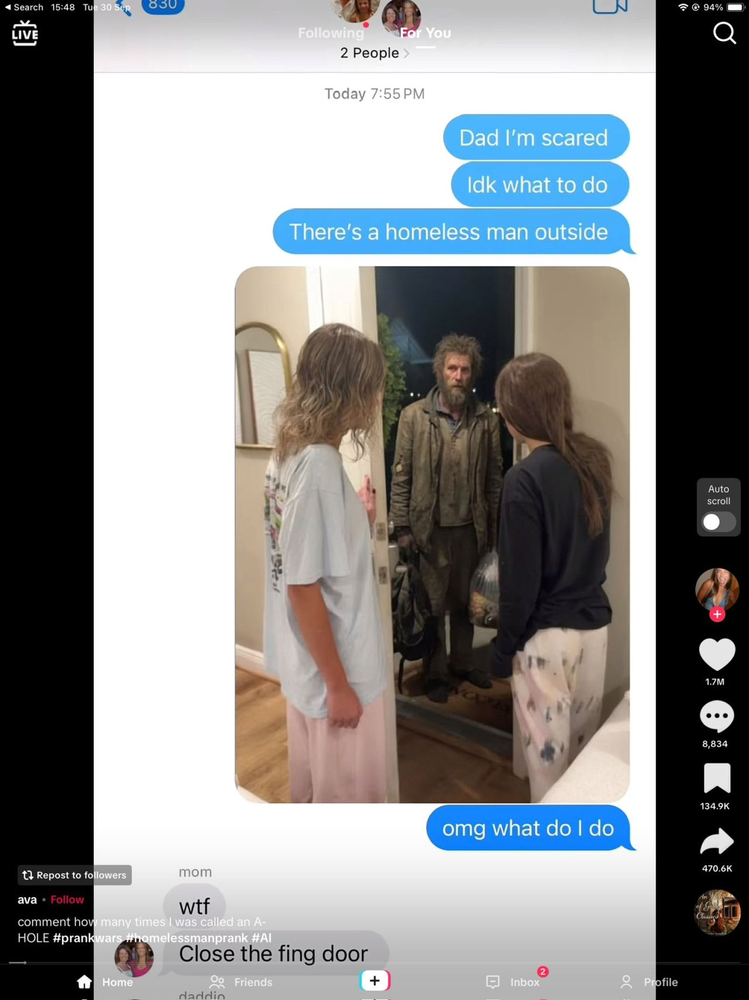
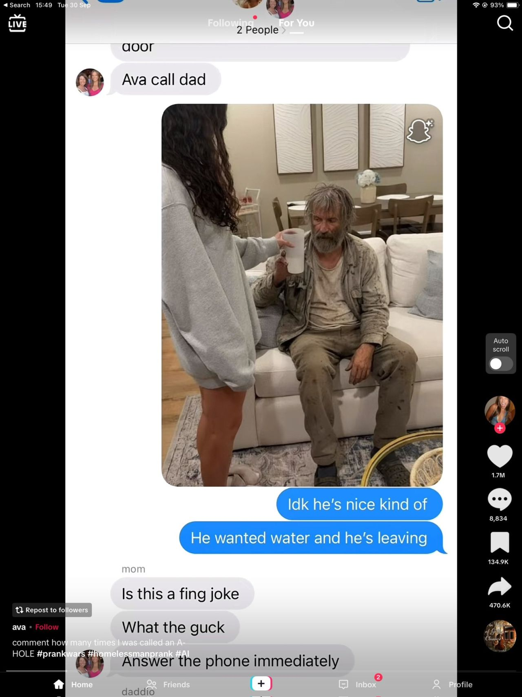
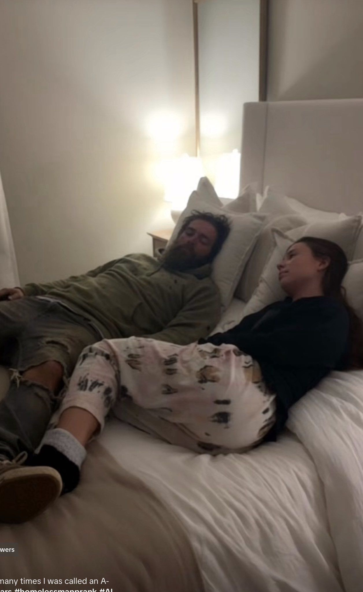

אחד באפריל גרסת ה-AI: טרנד חדש בטיקטוק - ילדים שולחים תמונות להורים שלהם ומפחידים אותם על ידי שתילת דמויות מלחיצות בתוך תמונות אמי
פורסם במקור ב LinkedIn
אחד באפריל גרסת ה-AI: טרנד חדש בטיקטוק - ילדים שולחים תמונות להורים שלהם ומפחידים אותם על ידי שתילת דמויות מלחיצות בתוך תמונות אמיתיות שלהם. מצחיק ומדאיג בו זמנית.
מקור: https://lnkd.in/dXnznae5


